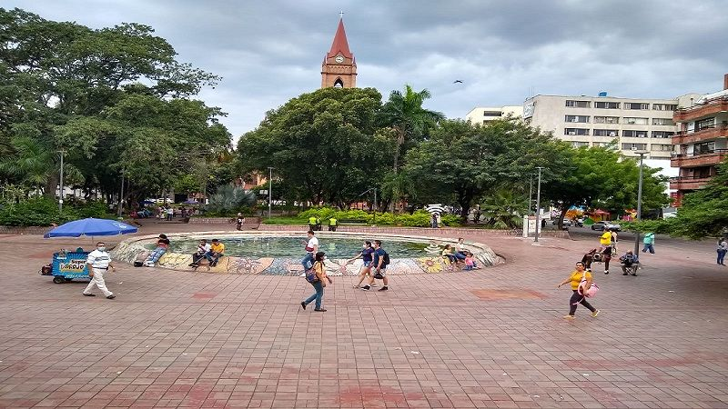
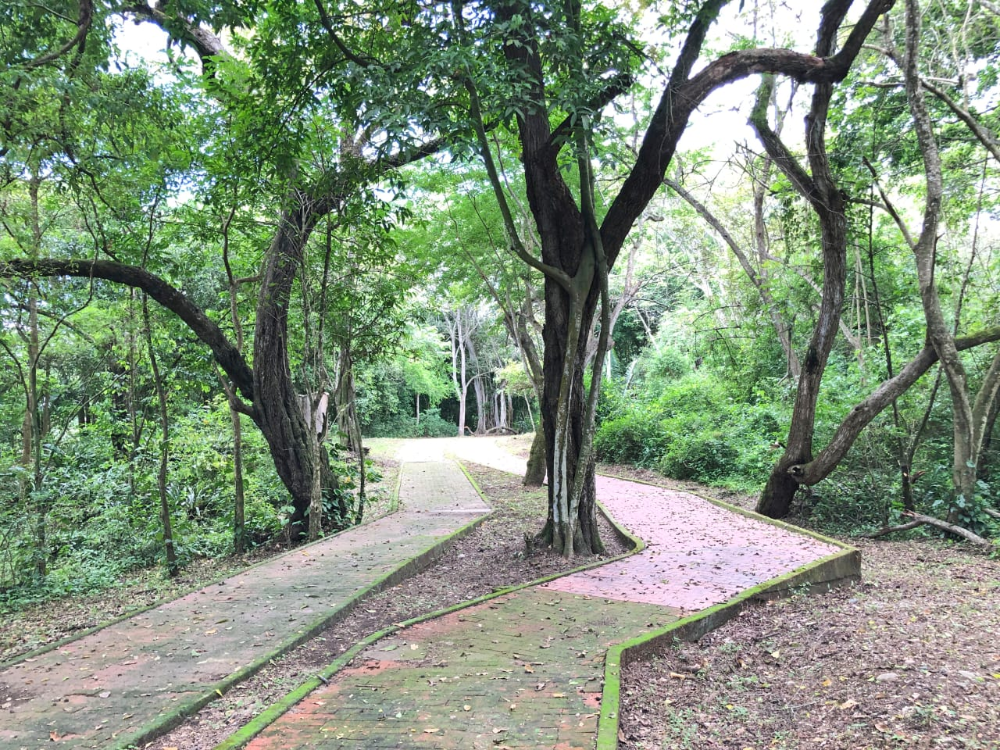
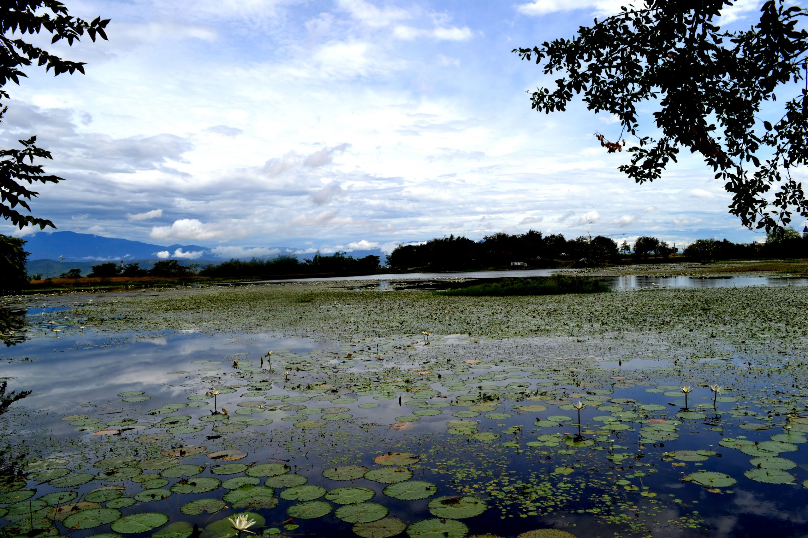
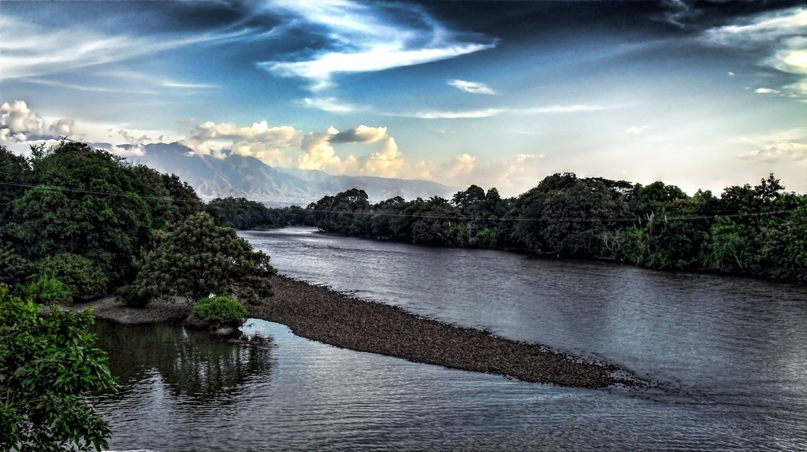
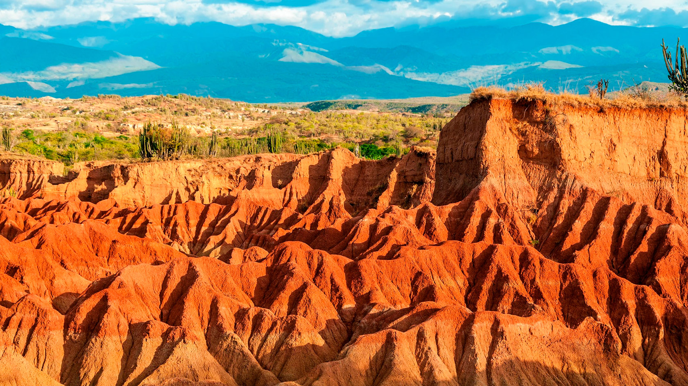

Nature
Discover natural landscapes, parks and outdoor experiences.
Parks

Parque Santander
One of the most traditional parks in the city center.
Uno de los parques más tradicionales del centro de la ciudad.

Parque Isla
Green recreational space for families and visitors.
Espacio recreativo verde para familias y visitantes.

Botanical Garden
A peaceful place to explore native plants and biodiversity.
Un lugar tranquilo para explorar plantas nativas y biodiversidad.
Rivers and Landscapes

Magdalena River
The most important river in Colombia crossing Neiva.
El río más importante de Colombia que atraviesa Neiva.

Tatacoa Desert
Famous natural destination near Neiva with unique landscapes.
Destino natural famoso cerca de Neiva con paisajes únicos.

Natural Viewpoints
Scenic places with panoramic views of Huila landscapes.
Lugares escénicos con vistas panorámicas de los paisajes huilenses.